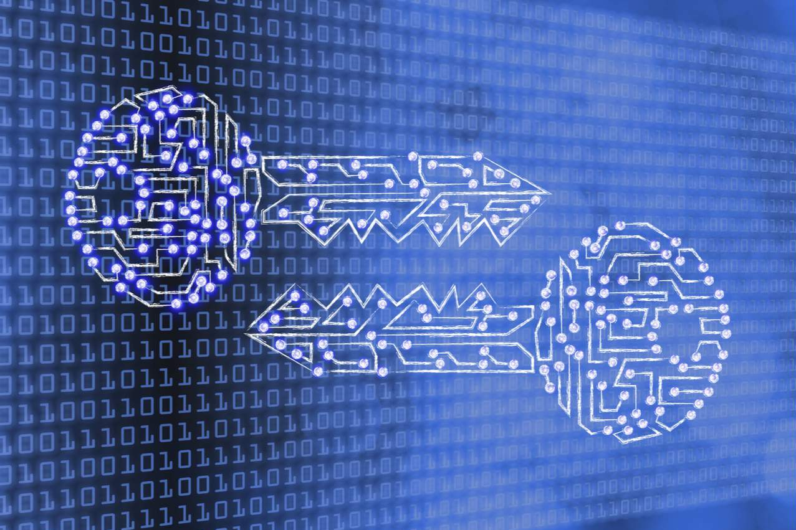
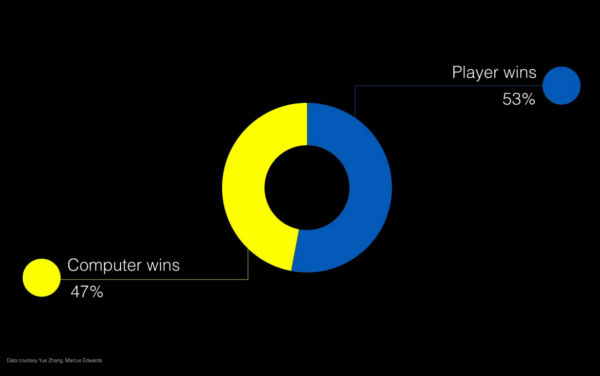
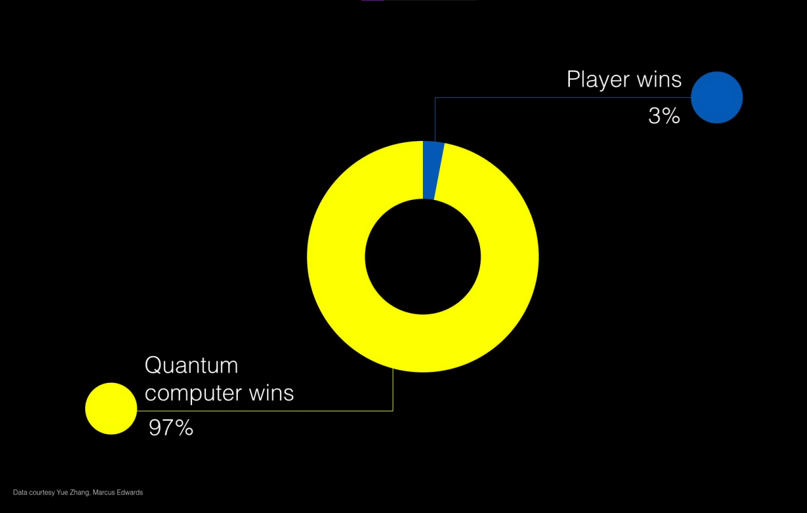

Como que a Física Quântica se aplica nesse contexto e qual a matemática por trás dela?
A matemática da computação quântica envolve conceitos da teoria quântica, álgebra linear e teoria da informação quântica. Os principais elementos matemáticos associados à computação quântica são:
Qubits: Também conhecidos como bits quânticos, são a unidade fundamental da informação quântica. Enquanto bits clássicos podem ser 0 ou 1, qubits podem existir em uma superposição desses estados.
Espaço de Hilbert: O estado de um sistema quântico, incluindo qubits, é representado por um vetor em um espaço complexo chamado Espaço de Hilbert. Cada qubit adiciona uma dimensão a esse espaço.
Superposição: Um qubit em superposição pode ser representado como uma combinação linear de seus estados de base. Por exemplo, um qubit em superposição pode ser |ψ⟩ = α|0⟩ + β|1⟩, onde α e β são amplitudes de probabilidade.
Entrelaçamento: Qubits entrelaçados estão correlacionados de maneira que o estado de um qubit não pode ser descrito independentemente do estado do outro.
Princípio da Incerteza de Heisenberg: A incerteza na medição simultânea de certas propriedades quânticas é expressa matematicamente através das relações de comutação, como [X, P] = iħ, onde X é a posição, P é o momento linear e ħ é a constante reduzida de Planck.
Algoritmo de Deutsch-Jozsa: Resolve um problema específico mais eficientemente do que algoritmos clássicos equivalentes.
Algoritmo de Shor: Fatora números inteiros em tempo polinomial, que é uma tarefa difícil para algoritmos clássicos.
Notação de Dirac (Notação Bra-Ket):
Ket (|ψ⟩): Um vetor coluna que representa o estado quântico de um sistema.
Bra (⟨ψ|): O conjugado transposto de um vetor ket.
Produto Interno (⟨φ|ψ⟩): O resultado da multiplicação do conjugado transposto de um vetor ket pelo vetor bra correspondente. Isso fornece um número complexo chamado amplitude de probabilidade.
Operados Quânticos:
Matriz de Pauli (X, Y, Z): São operadores que realizam rotações em torno dos eixos x, y e z no espaço de Bloch, que é uma representação geométrica dos estados quânticos de um qubit.
Portas Quânticas: São operadores que atuam em qubits e realizam transformações quânticas. Portas como a Porta NOT Quântica (ou Porta X) alteram o estado de um qubit.
Medição Quântica: A medição em um sistema quântico colapsa o estado quântico em um dos estados de base. A probabilidade de colapso em um determinado estado é proporcional ao quadrado da amplitude de probabilidade associada a esse estado.
Saiba mais:
Esse é um video chamado computação quântica para cientistas da computação feito pela Microsoft que abordara o tema mais afundo sobre o assunto.
A criptografia quântica se utiliza dos próprios algoritmos dela, sendo o seu principal o de Shor, criando-se uma chave privada para mensagens criptografadas de um lugar para o outro com uma defesa impenetrável pois para "hackearem" essa chave, teriam que quebrar as leis da física.

Cara ou Coroa
Em uma apresentação de Shohini Ghose em Ted Talks, ela fez um experimento com a audiência, onde eles jogaram Cara ou Coroa com um computador normal, e um quântico, o resultado foi o esperado onde 53% dos jogadores ganharam.

Porém o resultado surpreendende revela que o computador quântico venceu 97% de 372 vezes, perdendo os 3% por conta de erros operacionais.

O resultado só foi possivel pois: com o uso das físicas quânticas e da superposição, o computador cria uma moeda simultanea de cara ou coroa (lembrando: podendo ser 0 ou 1 simultaneamente)
mantendo-se intacta independente da ação do jogador, e quando ser sua vez, desfaz essa moeda simultanea e recupera o resultado instantaneamente, fazendo com que o jogador sempre perca.